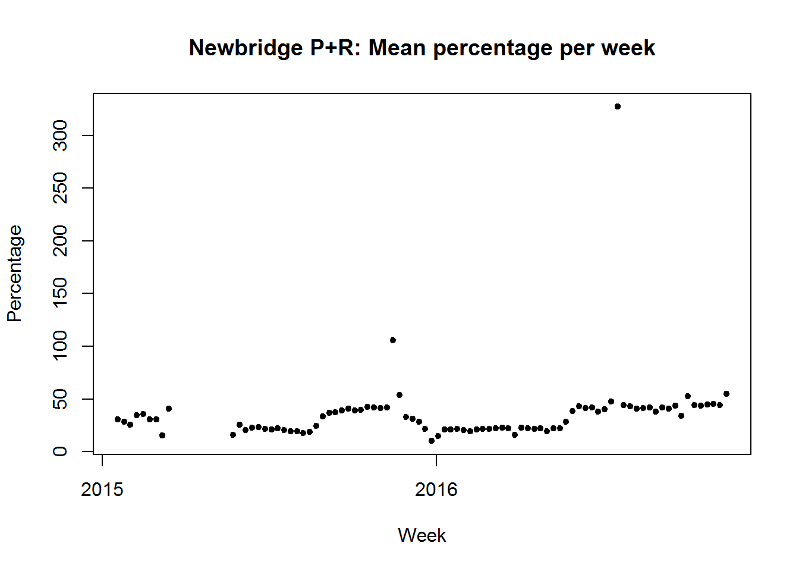
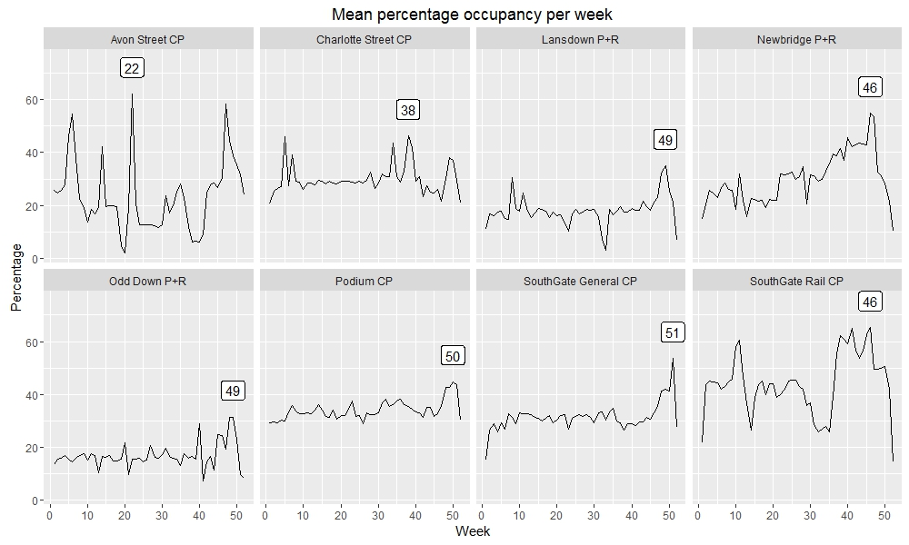
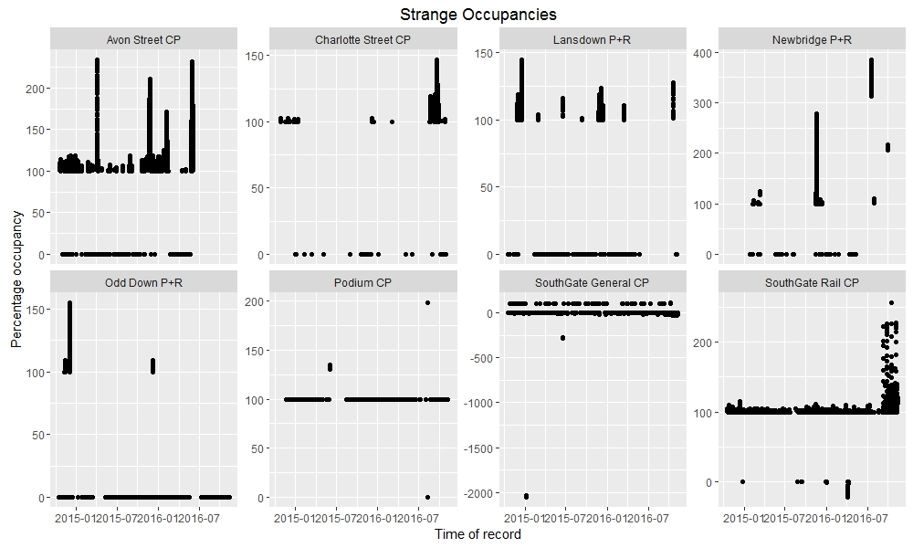

Day 06 (17/11/16): Podium CP timeshift check
As promised yesterday, I’m going to investigate the potential timeshift error in the data relating to one particular car park, caused by the changeover from GMT to BST.
# I'll have a look at records from spring of 2016 - clocks changed on 27/03/2016
# at 01:00
times <- df$LastUpdate[grep("^27/03/2016", df$LastUpdate)]
hours <- as.POSIXlt(times, format = "%d/%m/%Y %I:%M:%S %p", tz = "UTC")$hour
# Check number of records each hour (shouldn't be any at 1AM i.e. 2nd entry)
sapply(c(0:23), function(i) sum(hours == i))rconsole## [1] 96 12 86 94 96 96 96 96 96 96 97 95 96 96 96 96 96 96 96 96 96 98 95 ## [24] 95
# Approximately 1/8 as many records at 01:00 as at other times - is just one of
# the 8 car parks responsible?
names <- df$Name[grep("^27/03/2016", df$LastUpdate)]
names[hours == 1]rconsole## [1] Podium CP Podium CP Podium CP Podium CP Podium CP Podium CP Podium CP ## [8] Podium CP Podium CP Podium CP Podium CP Podium CP ## 9 Levels: Avon Street CP Charlotte Street CP ... test car park
```r# It seems Podium CP’s clock is not changing!
Let’s check previous year too - clocks changed on 29/03/2015
t <- df\(LastUpdate[grep("^29/03/2015", df\)LastUpdate)] h <- as.POSIXlt(t, format = “%d/%m/%Y %I:%M:%S %p”, tz = “UTC”)\(hour n <- df\)Name[grep(“^29/03/2015”, df$LastUpdate)]
sapply(c(0:23), function(i) sum(h == i))
```rconsole## [1] 84 12 72 84 84 84 84 84 84 84 84 84 84 84 84 84 84 84 84 84 84 84 84
## [24] 84```
```rn[h == 1]```
```rconsole## [1] Podium CP Podium CP Podium CP Podium CP Podium CP Podium CP Podium CP
## [8] Podium CP Podium CP Podium CP Podium CP Podium CP
## 9 Levels: Avon Street CP Charlotte Street CP ... test car park```
<p>Hmmm… let’s quickly try to see the effect of this error from one week to the next by comparing a day in a GMT week with the same weekday in a BST week. I’m going to use a couple of packages which are new to me - <code>dplyr</code> and <code>lubridate</code> - to manipulate the data.</p>
```r
library(dplyr)
library(lubridate)
# Get records for Podium CP from Tuesday, 22/03/2016 (arbitrary weekday!)
weekgmt <-
df %>%
filter(grepl("^22/03/2016", LastUpdate)) %>%
filter(grepl("Podium CP", Name))
roundedgmt <- round_date(as.POSIXct(weekgmt$LastUpdate,
format = "%d/%m/%Y %I:%M:%S %p", tz = "UTC"),
unit = "10 min")
weekgmt$Time <- hour(roundedgmt) + minute(roundedgmt)/60
# Get records for Podium CP from exactly 1 week later, after clocks had changed
weekbst <- df %>%
filter(grepl("^29/03/2016", LastUpdate)) %>%
filter(grepl("Podium CP", Name))
roundedbst <- round_date(as.POSIXct(weekbst$LastUpdate,
format = "%d/%m/%Y %I:%M:%S %p",
tz = "UTC"),
unit = "10 min")
weekbst$Time <- hour(roundedbst) + minute(roundedbst)/60
# Nothing too fancy with the plotting today!
plot(weekgmt$Time, weekgmt$Percentage, pch = 20, ylim = c(0, 100),
xlab = "Time", ylab = "Percentage", main = "Podium CP timeshift check")
points(weekbst$Time, weekbst$Percentage, pch = 20, col = "blue")
legend("topright", c("22/03/2016 (GMT)", "29/03/2016 (BST)"),
fill = c("black", "blue"))Oh… those curves look quite similar. There certainly isn’t an obvious one-hour shift from one week to the next.
Let’s have another look at that vector from earlier of the number of records from each hour:
sapply(c(0:23), function(i) sum(hours == i))rconsole## [1] 96 12 86 94 96 96 96 96 96 96 97 95 96 96 96 96 96 96 96 96 96 98 95 ## [24] 95
I was focusing so much on the suspicious 2nd element that I didn’t spot the also-somewhat-suspicious 3rd element - there are noticeably fewer records from 02:00 to 02:59 than from the other hours. This would be explained if Podium CP changes its clocks at 02:00, rather than 01:00… let’s see.
rsum(names[hours == 2] == "Podium CP") r## [1] 0
So none of the records taken between 02:00 and 03:00 were from Podium CP - confirming my theory.
There is, then, as I suspected, some timeshift error in the data from Podium CP.
However, the error is present for a grand total of 2 hours each year (one hour on a spring day, one on an autumn day), and records from these hours are between 01:00 and 03:00, when there is virtually no change in the occupancy of the car park. Therefore I think it is reasonable not to worry about it too much!
Day 07 (18/11/16): Status by weekday
I seem to have been converting the LastUpdate column to various date formats fairly regularly. Right now, I can’t think of any good reason why I need to leave it in character format, so I’ll save myself a step in future and re-write the column in my CSV.
library(dplyr)
df <- read.csv("df.csv")
df <- mutate(df, LastUpdate = as.POSIXct(LastUpdate,
format = "%d/%m/%Y %I:%M:%S %p"))
write.csv(df, "df.csv")On to today’s work.
There’s one column I haven’t really looked at so far: the Status column, which describes the change in occupancy of the car park compared to the previous record. Let’s have a look:
rsummary(df$Status) rconsole## Emptying Filling Static ## 1333 474595 404339 647960
There are a number of records without entries in the Status column - but remembering a discovery from a previous day, I have an idea of who the culprit might be…
rsummary(df[df$Name == "test car park", ]$Status) rconsole## Emptying Filling Static ## 1333 0 0 0
That accounts for the 1333 records with no Status entry, then.
Onwards! We’ll remove the “test car park” records, and then for each car park and each weekday we’ll calculate the percentage of records that have each possible Status.
rlibrary(lubridate)
df2 <-
select(df, Name, LastUpdate, Status) %>%
filter(Name != "test car park") %>%
mutate(Day = wday(LastUpdate, label = TRUE)) %>%
group_by(Name, Day) %>%
summarize(Filling = sum(Status == "Filling") / n(),
Static = sum(Status == "Static") / n(),
Emptying = sum(Status == "Emptying") / n())
head(df2)rconsole## Source: local data frame [6 x 5] ## Groups: Name [1] ## ## Name Day Filling Static Emptying ## <fctr> <ord> <dbl> <dbl> <dbl> ## 1 Avon Street CP Sun 0.2601505 0.3397476 0.4001019 ## 2 Avon Street CP Mon 0.3163539 0.3390450 0.3446012 ## 3 Avon Street CP Tues 0.3585985 0.2763592 0.3650423 ## 4 Avon Street CP Wed 0.3831001 0.2751629 0.3417370 ## 5 Avon Street CP Thurs 0.3306908 0.2689445 0.4003647 ## 6 Avon Street CP Fri 0.3864523 0.2756433 0.3379044
I’m aiming for a stacked-bar-type chart today, and it seems the most effective way to do this is to have the data in so-called ‘long’ format - so I’ll use another package I haven’t used much before, reshape2, to reformat the data:
library(reshape2)
df3 <- melt(df2)rconsole## Using Name, Day as id variables rhead(df3)> rconsole## Name Day variable value ## 1 Avon Street CP Sun Filling 0.2601505 ## 2 Avon Street CP Mon Filling 0.3163539 ## 3 Avon Street CP Tues Filling 0.3585985 ## 4 Avon Street CP Wed Filling 0.3831001 ## 5 Avon Street CP Thurs Filling 0.3306908 ## 6 Avon Street CP Fri Filling 0.3864523
Right, let’s plot!
```rlibrary(ggplot2)
p <- ggplot(df3, aes(x = Day, y = value, fill = variable)) + geom_bar(stat = “identity”) + coord_flip() + facet_wrap(~ Name, nrow = 2) + scale_fill_manual(values = c(“#FF4444”, “#AAAAAA”, “#6666FF”))
p<img src="day07odd.jpeg" /> <p>Immediately we notice that our week has been extended with an eighth day - NAday.</p> <p>This extra day seems to have been provided by Podium CP, which is by this point getting a reputation as a bit of a rebel… and as well as giving us NAday, it seems that Podium CP never fills or empties either.</p>rsummary(df[df\(Name == "Podium CP",]\)Status)rconsole## Emptying Filling Static ## 0 0 0 191022<p>Maybe every car that enters perfectly synchronizes with an exiting car. Maybe no-one ever enters or exits. We may never know.</p> <p>Let’s remove the NAday records, just to tidy up the plot a little, and then re-plot.</p>rdf <- df[!is.na(df$LastUpdate), ] # Repeat all code for df2, df3
I’ll make the plot a bit prettier too
library(scales)
p <- ggplot(df3, aes(x = Day, y = value, fill = variable)) + geom_bar(stat = “identity”) + coord_flip() + facet_wrap(~ Name, nrow = 2) + scale_fill_manual(values = c(“#FF4444”, “#AAAAAA”, “#6666FF”)) + scale_x_discrete(limits = rev(levels(df2$Day))) + scale_y_continuous(labels = percent) + ggtitle(“Status by weekday”) + labs(x = “Day”, y = “Percent of records”, fill = ““) + theme(plot.title = element_text(size = 22, face =”bold”))
p```
This plot gives us some idea of the ‘turnaround’ of the different car parks. Looking, for example, at the two SouthGate car parks, we can see that SG General is rarely static, suggesting a near-constant flow of cars entering and exiting. In contrast, SG Rail is static more than half the time.
This corresponds to the role of the two car parks: SG General is in the town centre near the main shopping area, and so is used by a lot of people for relatively short periods of time. On the other hand SG Rail is primarily used by rail commuters, so during the day there isn’t much change in its occupancy - it fills and empties rapidly each morning and evening. This behaviour can actually be seen on the plot from Day 04, where SG Rail’s occupancy is much ‘squarer’ than the other car parks, particularly during the working week.
Day 08 (19/11/16): More dodgy data…
I just noticed a couple of things about my dataframe, df.
Firstly, because I’ve re-written it to CSV a couple of times and forgotten to turn off row.names, it’s picked up a couple of extra unnecessary columns.
Secondly, LastUpdate still isn’t in POSIXct form.
I’m going to go back to the original huge dataframe and sort out these issues for hopefully the last time.
```rlibrary(dplyr) library(lubridate)
df <- read.csv(“C:/Users/Owen/Documents/Coding/Parking/data/BANES_Historic_Car_Park_Occupancy.csv”) %>% select(Name, LastUpdate, Capacity, Occupancy, Percentage, Status) %>% mutate(LastUpdate = as.POSIXct(LastUpdate, format = “%d/%m/%Y %I:%M:%S %p”, tz = “UTC”))
str(df)rconsole## ‘data.frame’: 1528227 obs. of 6 variables: ## $ Name : Factor w/ 9 levels “Avon Street CP”,..: 7 1 3 8 6 4 2 5 8 5 … ## $ LastUpdate: POSIXct, format: “2016-02-13 02:08:46” “2016-02-13 02:09:36” … ## $ Capacity : int 720 630 827 140 521 698 1056 1252 140 1252 … ## $ Occupancy : int 28 32 8 15 75 21 124 0 15 0 … ## $ Percentage: int 3 5 1 10 14 3 12 0 10 0 … ## $ Status : Factor w/ 4 levels ““,”Emptying”,..: 4 3 4 4 4 4 3 4 4 4 …<p>That’s more like it. Let’s write that to a file.</p>rwrite.csv(df, “df.csv”, row.names = FALSE)<p>Now let’s load it in again, just to make sure:</p>rdf <- read.csv(“C:/Users/Owen/Documents/Coding/Parking/df.csv”)
str(df)rconsole## ‘data.frame’: 1528227 obs. of 6 variables: ## $ Name : Factor w/ 9 levels “Avon Street CP”,..: 7 1 3 8 6 4 2 5 8 5 … ## $ LastUpdate: Factor w/ 1004552 levels “2014-10-17 15:43:21”,..: 659008 659009 659011 659008 659007 659010 659009 659012 659119 659123 … ## $ Capacity : int 720 630 827 140 521 698 1056 1252 140 1252 … ## $ Occupancy : int 28 32 8 15 75 21 124 0 15 0 … ## $ Percentage: int 3 5 1 10 14 3 12 0 10 0 … ## $ Status : Factor w/ 4 levels ““,”Emptying”,..: 4 3 4 4 4 4 3 4 4 4 …<p>Oh. It seems that we lose the POSIXct date format when we write to and/or read from a CSV file. I suppose I will just have to convert it whenever I need to.</p> <p>OK, on to today. The Christmas lights in Bath were switched on a couple of days ago in readiness for the Christmas market, which starts next week. Knowing that Bath gets particularly busy during this period, I thought I’d have a look at the mean occupancy of each car park per week, and see if there is some sort of increase in late November and early December - particularly in the park and ride (P+R) car parks, which the council advises visitors to use during the market period.</p> <p>Let’s set up a dataframe and use <code>dplyr</code> and <code>lubridate</code> functions to calculate the mean occupancy per week, by car park.</p>rdf2 <- df %>% select(Name, LastUpdate, Percentage) %>% na.omit() %>% filter(Name != “test car park”) %>% mutate(Week = week(ymd_hms(LastUpdate))) %>% group_by(Name, Week) %>% summarize(meanP = mean(Percentage))
Let’s have a look at the max values of these percentages
maxP <- summarize(df2, max(meanP))
maxPrconsole## # A tibble: 8 × 2 ## Name max(meanP) ## <p>Hang on. At some point, Newbridge CP was apparently, on average, well above 100% full over the course of a week.</p> <p>Let’s see how this has happened.</p>rnewbridge <- df %>% filter(Name == “Newbridge P+R”) %>% mutate(Week = round_date(ymd_hms(LastUpdate), “week”)) %>% group_by(Name, Week) %>% summarize(meanP = mean(Percentage))
plot(newbridge\(Week, newbridge\)meanP, main = “Newbridge P+R: Mean percentage per week”, pch = 20, xlab = “Week”, ylab = “Percentage”)```
Well, it’s immediately obvious where the problem is! That point at above 300% can only be explained by a broken exit sensor.
Tomorrow I’ll sort out this problem and carry on with my initial aim.
Day 09 (20/11/16): Mean occupancy per week
Continuing from yesterday’s work, I’ll add a couple of steps to the pipeline to cut out any weeks with a mean occupancy greater than 100%, and then to average by week.
rdf2 <- df %>% select(Name, LastUpdate, Percentage) %>% na.omit() %>% filter(Name != "test car park") %>% mutate(Week = round_date(ymd_hms(LastUpdate), "week")) %>% group_by(Name, Week) %>% summarize(meanP = mean(Percentage)) %>% filter(meanP <= 100) %>% mutate(Week = week(Week)) %>% group_by(Name, Week) %>% summarize(meanP = mean(meanP))
Now let’s have another look at the maximum values per car park:
rmaxP <- top_n(df2, n = 1) rconsole## Selecting by meanP rmaxP</span> rconsole## Source: local data frame [8 x 3] ## Groups: Name [8] ## ## Name Week meanP ## <fctr> <dbl> <dbl> ## 1 Avon Street CP 22 62.19749 ## 2 Charlotte Street CP 38 46.25655 ## 3 Lansdown P+R 49 35.03728 ## 4 Newbridge P+R 46 54.86416 ## 5 Odd Down P+R 49 31.49185 ## 6 Podium CP 50 44.81424 ## 7 SouthGate General CP 51 53.58644 ## 8 SouthGate Rail CP 46 65.25588
That looks better!
Let’s plot the data then. I’ll add a label with the week number for the week with the maximum mean percentage occupancy.
```rlibrary(ggplot2)
p <- ggplot(df2, aes(x = Week, y = meanP)) + geom_line() + facet_wrap(~ Name, nrow = 2) + geom_label(data = maxP, aes(x = Week, y = meanP + 10, label = Week)) + ggtitle(“Mean percentage occupancy per week”) + ylab(“Percentage”)
p``` Other than Avon Street CP, which seems to fluctuate wildly over the course of the year, and Charlotte Street CP, which interestingly seems to drop slightly around November, the maximum values are - as I had expected - generally towards the end of the year.
SouthGate General CP actually has a noticeable peak in Week 51 - potentially due to last-minute Christmas shopping/Boxing Day sales.
And two of the P+Rs have their max average occupancy in Week 49 - approximately the first week of December, right in the middle of the market period (my prediction was spot on!).
Also, for all car parks there is a noticeable tail-off in the last couple of weeks of the year, presumably due to most people preferring to be at home over the Christmas period than out and about in the town.
Day 10 (21/11/16): Strange occupancies
Today I received not one, but two pieces of coursework for two separate modules of my uni course - and as such I am going to be under serious time pressure for the next couple of weeks. So I will do my best to keep up with these posts but bear with me if they become a little sloppier or less detailed.
I am going to start investigating some of the quirks of the dataset - to be honest, I probably should have done this earlier, before some of my other analyses, but I’ll see how serious any issues are and then I can always revisit and correct previous visualizations.
Let’s see some of the stranger records in the dataset - the records where a car park has zero occupancy (possible), >100% occupancy (possible if the car park is full and more cars are circulating waiting for spaces, but probably uncommon), and negative occupancy (not possible and definitely due to dodgy sensors!).
rlibrary(dplyr) library(lubridate) ```rdf3 <- df %>% filter(Occupancy <= 0 | Occupancy >= Capacity) %>% group_by(Name)
library(ggplot2)
ggplot(df3, aes(x = ymd_hms(LastUpdate), y = Percentage)) + geom_point() + facet_wrap(~ Name, scales = “free_y”, nrow = 2) + ggtitle(“Strange Occupancies”) + labs(x = “Time of record”, y = “Percentage occupancy”)``` Of particular note are the times when Newbridge P+R contained 4 times as many cars as its maximum capacity, and when SouthGate General CP contained about -20 times its maximum capacity (i.e. about -14400 cars).